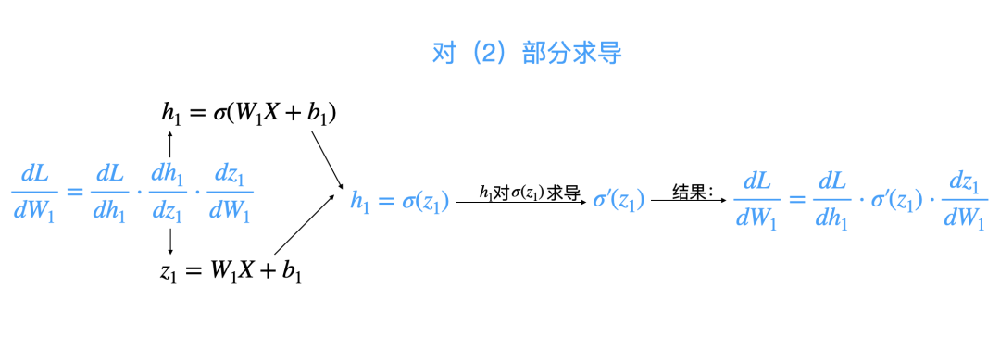
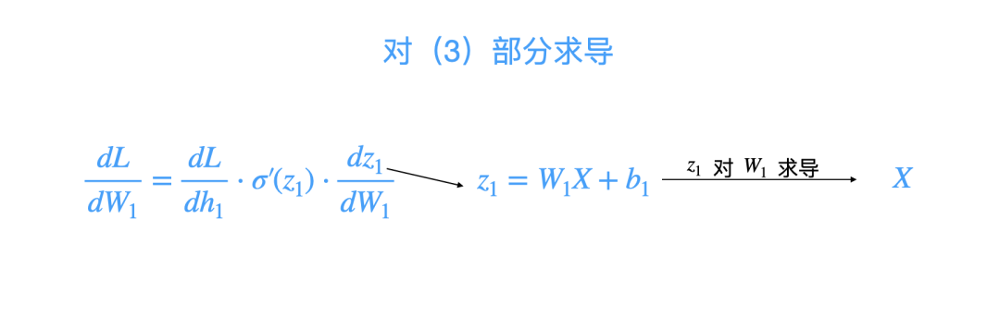
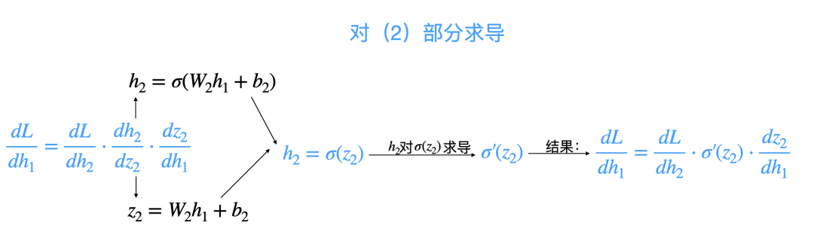
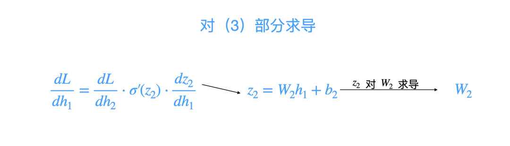
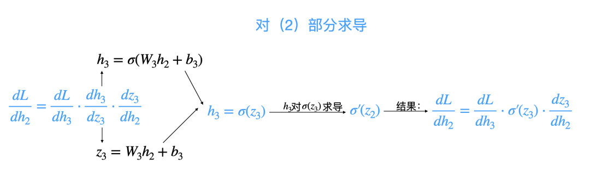
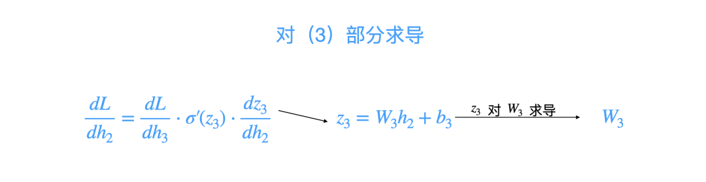
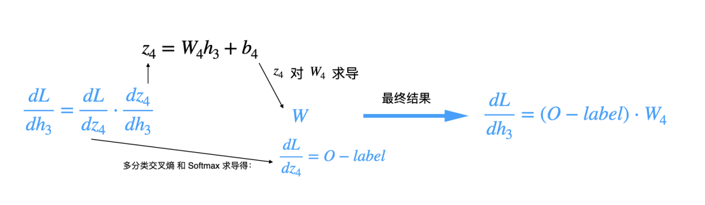
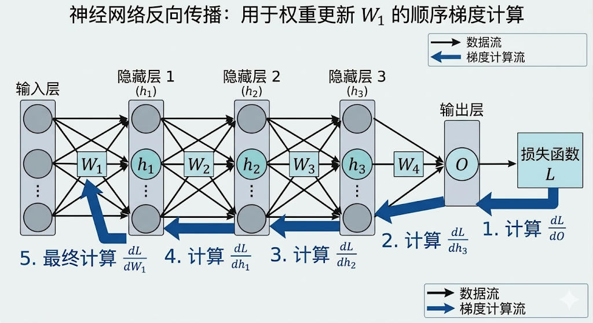
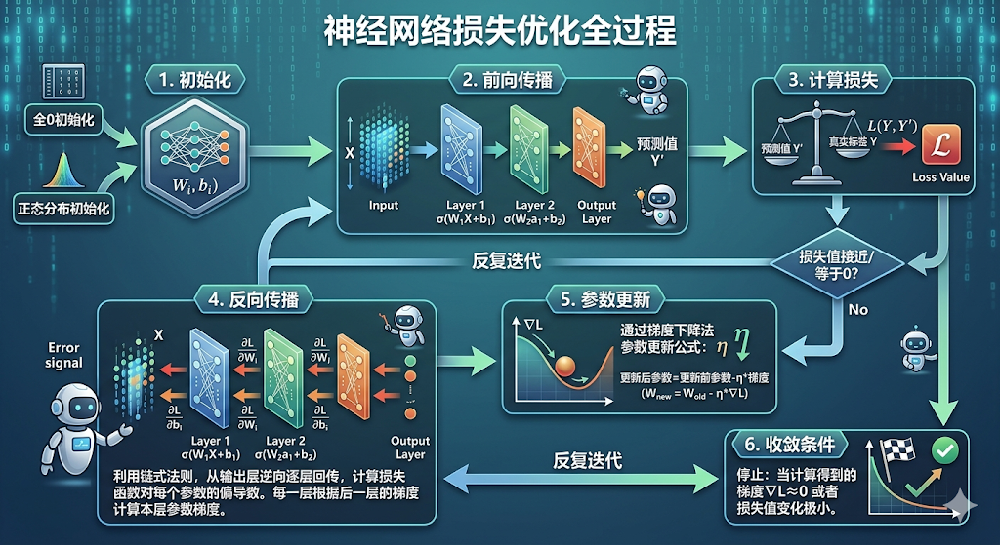

"反向传播算法是深度学习最重要的思想之一……它让多层网络的训练变得切实可行。"--Geoffrey Hinton
我们一起回顾一下第8讲所学习过的单层感知机损失优化的一般过程：
而从单层感知机修改为多层感知机之后的模型结构，自然而然产生了前向传播的概念，随之损失优化的一般步骤需调整如下：
但是观察上述"梯度下降，参数更新"的这两个步骤，在含有多层隐藏层的神经网络结构的情况下并不适用，因为上述梯度计算是单层感知机计算梯度的过程，简单来说，这个梯度是输出层的梯度，隐藏层的梯度又该如何计算呢？
要解决这个问题，我们依然还是要利用导数、偏导数的知识，我们说过，导数反映的就是一种"瞬时变化率"，比如，上坡时速度变慢，下坡时变快，这里的"快"与"慢"讲的就是瞬时速度，就是导数。
而偏导数，就是一种"控制变量法"的思想，当函数存在多个变量的（多元函数）情况下，控制其他变量不变，专门针对某个变量求导数，就称之为偏导数。
而损失函数对某个参数"求偏导"，目的就是要知道极微小调整某个参数（微分思想），损失会如何变化，这就是针对某个参数在求梯度的意义。
当我们通过计算损失知道了预测值 $Y_p$ 和真实值 $Y$ 之间的差距，我们就要调整神经网络的权重参数，但是神经网络的参数少则几千个，多则上万，甚至上亿，比如目前最大的模型Qwen3-Max-Preview参数量达到了1万亿。
这么多参数量的情况下参数更新错误，可能训练时永远都无法收敛（损失不下降）。
那怎么求解呢？看现象还是应该看本质，神经网络模型本质上其实还是函数，甚至可以看作是一个层层嵌套的复合函数：
$$ 输入层：X $$ $$ 隐藏层1:h_1 = σ(W_1X + b_1) $$ $$ 隐藏层2：h_2 = σ(W_2h_1 + b_2) $$ $$ 隐藏层3：h_3 = σ(W_3h_2 + b_3) $$ $$ 输出层：O = σ(W_4h_3 + b_4) $$以上层层嵌套的关系，可以粗略的用复合函数表达：
$$ L = L(O(h_3(h_2(h_1(X))))) $$为了更新第一个隐藏层 $h_1$ 的权重参数 $W_1$ 和 $b_1$，我们要计算损失函数Loss对权重参数 $W_1$ 的偏导数是多少，它可以告诉我们 $W_1$ 的微小变动将会如何影响最终的损失Loss，从而指导我们如何调整 $W_1$ 才能使得损失Loss下降。
因此损失函数 $L$ 对权重 $W_1$ 求偏导，实际上就是复合函数 $L(O(h_3(h_2(h_1(X)))))$ 对 $W_1$ 求偏导。
这个时候就要用到链式法则了，很多人在学习链式法则这一知识点遇到了困难，其实不难，这是高中时期的数学知识，我们通过以下几个小例子先来说明链式法则的威力和作用，以及与复合函数的关系。
例1：求函数 $y = (4x + 2)^3$ 的导数，你会怎么求，最直接的方法是先多项式展开，但是这样一来，计算量巨大且繁琐。
但是链式法则教会我们用复合函数的视角来求解，问题便简单了：
分别求导：
求导符号 $\frac{du}{dx}$ 的解释：
$d$：来自英文 differential，意思是微小的变化量
$dx$：自变量 x 的极小变化
$du$：函数 u 对应的极小变化
所以：
$\dfrac{du}{dx}= \dfrac{\text{函数 }u\text{ 的微小变化}}{\text{自变量 }x\text{ 的微小变化}}$
链式相乘：$\frac{dy}{dx} = \frac{dy}{du} \cdot \frac{du}{dx} = 3u^2 \cdot 4 = 12u^2$
$y'$ = $f'(u)$ * $g'(x) =4*3u^2=12u^2$ ，最终结果为 $12u^2$ ，对于多层复合函数，链式法则展示了其强大的拓展性，链式法则的妙处在于其可以将一个复杂问题分解为一个一个的子问题，那链式法则要如何应用于损失优化呢？
具体则回到损失函数 $L$ 对 $W_1$ 求导的问题上，用求导符号表示：$\frac{dL}{dW_1}$
同样的运用链式连则将大问题拆解为小问题：
$$ \frac{d L}{d W_1} = \frac{d L}{d h_1} \cdot \frac{d h_1}{d z_1} \cdot \frac{d z_1}{d W_1} $$其中：
$$ h_1 = σ(W_1X + b_1) $$ $$ z_1 = W_1X + b_1 $$现在已经将原求导函数拆解为了三部分：$(1)\frac{d L}{d h_1}$、$(2)\frac{d h_1}{d z_1}$ 、$(3)\frac{d z_1}{d W_1}$ ，我们分三步求解，我们先看(2)和(3)两部分，先不求 $(1)\frac{d L}{d h_1}$：
第一步，求(2)：
$(2)\frac{d h_1}{d z_1}$ 的意思不就是 $h_1$ 对 $z_1$ 求导吗，而 $h_1$ 和 $z_1$ 关系是什么？$h_1 = σ(z_1)$, 那 $h_1$ 对 $z_1$ 求导不就是 $σ'(z_1)$，而 $σ'(z_1)$ 是什么，一个复合函数。注意！这里不要把 $z_1$ 看作函数，而是看作一个变量，$σ'(z_1)$ 不就是对激活函数 $σ$ 求导数吗？所以结果：
$$ \frac{d L}{d W_1} = \frac{d L}{d h_1} \cdot σ'(z_1) \cdot \frac{d z_1}{d W_1} $$
第二步，求(3)：
$(3)\frac{d z_1}{d W_1}$ 的意思不就是函数 $z_1 = W_1X + b_1$ 对 $W_1$ 求偏导吗？这个时候把 $W_1$ 看做变量，不就是对一元一次方程求导，其导数不就是系数 $X$ 吗？所以结果：
$$ \frac{d L}{d W_1} = \frac{d L}{d h_1} \cdot σ'(z_1) \cdot X $$
第三步，求(1)：分解 $(1)\frac{d L}{d h_1}$，又拆出三部分
现在再来求解 $(1)\frac{d L}{d h_1}$ ，$h_1$ 影响了 $h_2$ ，因此继续应用链式法则：
$$ \frac{d L}{d h_1} = \frac{d L}{d h_2} \cdot \frac{d h_2}{d z_2} \cdot \frac{d z_2}{d h_1} $$现在已经将原求导函数拆解为了三部分：$(1)\frac{d L}{d h_2}$、$(2)\frac{d h_2}{d z_2}$ 、$(3)\frac{d z_2}{d h_1}$ ，我们分三步求解，我们先看(2)和(3)两部分：
第一步，求(2)：
其中 $(2)\frac{d h_2}{d z_2}$ 的意思不就是 $h_2$ 对 $z_2$ 求导吗，即 $σ'(z_2)$ ，所以结果：
$$ \frac{d L}{d h_1} = \frac{d L}{d h_2} \cdot σ'(z_2) \cdot \frac{d z_2}{d h_1} $$
第二步，求(3)：
而 $(3)\frac{d z_2}{d h_1}$ 不就是函数 $z_2 = W_2h_1 + b_2$ 对 $h_1$ 求导吗？把 $h_1$ 看作未知数，不就是对一元一次方程求导，其导数不就是系数 $W_2$ 吗？所以结果：
$$ \frac{d L}{d h_1} = \frac{d L}{d h_2} \cdot σ'(z_2) \cdot W_2 $$
第三步，求(1)：分解 $(1)\frac{d L}{d h_2}$，又拆出三部分
现在再来求解 $(1)\frac{d L}{d h_2}$ ，$h_2$ 影响了 $h_3$ ，因此继续应用链式法则：
$$ \frac{d L}{d h_2} = \frac{d L}{d h_3} \cdot \frac{d h_3}{d z_3} \cdot \frac{d z_3}{d h_2} $$现在已经将原求导函数拆解为了三部分：$(1)\frac{d L}{d h_3}$、$(2)\frac{d h_3}{d z_3}$ 、$(3)\frac{d z_3}{d h_2}$ ，我们分三步求解，我们先看(2)和(3)两部分：
第一步，求(2)：
其中 $(2)\frac{d h_3}{d z_3}$ 的意思不就是 $h_3$ 对 $z_3$ 求导吗，即 $σ'(z_3)$ ，所以结果：
$$ \frac{d L}{d h_2} = \frac{d L}{d h_3} \cdot σ'(z_3) \cdot \frac{d z_3}{d h_2} $$
第二步，求(3)：
而 $(3)\frac{d z_3}{d h_2}$ 不就是函数 $z_3 = W_3h_2 + b_3$ 对 $h_2$ 求导吗？把 $h_2$ 看作未知数，不就是对一元一次方程求导，其导数不就是系数 $W_3$ 吗？
$$ \frac{d L}{d h_2} = \frac{d L}{d h_3} \cdot σ'(z_3) \cdot W_3 $$
第三步，求(1)：分解 $(1)\frac{d L}{d h_3}$，又拆出三部分
现在再来求解 $(1)\frac{d L}{d h_3}$ ，$h_3$ 影响了输出层 $O$ ，因此继续应用链式法则：
$$ \frac{d L}{d h_3} = \frac{d L}{d O} \cdot \frac{d O}{d z_4} \cdot \frac{d z_4}{d h_3} $$现在已经将原求导函数拆解为了三部分：$(1)\frac{d L}{d O}$、$(2)\frac{d O}{d z_4}$ 、$(3)\frac{d z_4}{d h_3}$ ，这一层已拆解到输出层，同时也对输出 $O$ 求导，即 $(1)\frac{d L}{d O}$ 部分。
本来我们要先求解 $(1)\frac{d L}{d O}$ ，但是假设损失函数为多分类交叉熵，且输出层使用 $Softmax$ 函数，通过推导会得到一个非常简洁的结果：损失函数对输出层线性输入 $z_4$ 的梯度为：
$$ \frac{d L}{d z_4} = O-label $$原本求 $\frac{d L}{d h_3} = \frac{d L}{d O} \cdot \frac{d O}{d z_4} \cdot \frac{d z_4}{d h_3}$ ，可以通过约项 ${d O}$ 则可以改为和 $\frac{d L}{d z_4}$ 有关的新公式 ：
$$ \frac{d L}{d h_3} = \frac{d L}{d z_4} \cdot \frac{d z_4}{d h_3} $$在式子 $\frac{d L}{d z_4} = O-label$ 中，$label$ 为真实标签，$O$ 为最终预测输出。
回顾一下输出层的线性输入和输出分别是什么：
$$ O = σ(W_4h_3 + b_4) $$ $$ z_4 = W_4h_3 + b_4 $$而 $\frac{d z_4}{d h_3}$ 不就是函数 $z_4 = W_4h_3 + b_4$ 对 $h_3$ 求导吗？把 $h_3$ 看作未知数，不就是对一元一次方程求导，其导数不就是系数 $W_4$ 吗？
因此：
$$ \frac{d L}{d h_3} = \frac{d L}{d z_4} \cdot \frac{d z_4}{d h_3} $$又因为：
$$ \frac{d L}{d z_4} = O-label $$最终结果为：
$$ \frac{d L}{d h_3} = (O-label) \cdot W_4 $$
通过以上的案例，我们知道了什么是链式法则，运用链式法则层层分解可以得到最终结果。
那什么是反向传播呢？我们知道想要求解 $\frac{d L}{d W_1}$ ，需先计算损失函数L对输出层O的梯度： $\frac{d L}{d O}$，然后计算隐藏层3 的梯度：$\frac{d L}{d h_3}$ ，然后计算隐藏层2的梯度：$\frac{d L}{d h_2}$，再计算隐藏层1的梯度：$\frac{d L}{d h_1}$，最终计算 $\frac{d L}{d W_1}$，如下图：

像这样，从输出层通过链式法则开始逆向计算损失函数 $L$ 对每一隐藏层中的参数求偏导数（梯度）的过程，称之为反向传播。
这些不都是高中数学知识？可见反向传播和链式法则并没有什么神秘。
我们最终完整的总结损失优化全过程，增加反向传播这一步骤：

链式法则
链式法则是复合函数求导的基本规则，把一层套一层的函数导数，拆成多步简单导数相乘。它让我们能从外到内、分步算出复杂函数对内部变量的变化率。
反向传播
反向传播是神经网络算参数梯度的算法，本质就是从输出往输入倒着用链式法则。
用它算出每个权重对误差的影响，再更新权重，让模型的预测误差越来越小。